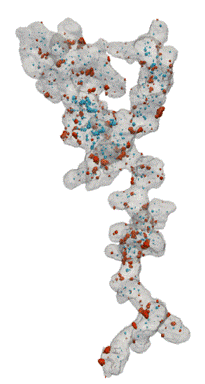

Introduction
Kitware Course Week, Clifton Park, NY
24 July, 2019
Marcus D. Hanwell
PhD: Thiol Coated Gold Nanoparticles
Tomviz: 3D Materials Tomography
- Open source project, tomviz.org
- DOE SBIR—Kitware-Cornell collaboration
- Phase IIB now—Kitware-Michigan collaboration
- Focus on 3D tomography for materials
- Data from TEM microscope
- Possible to obtain atomic resolution in 3D
- Go from image stack collected on microscope
- Align the images
- Reconstruct the 3D volume
- Uses Python, NumPy, SciPy
- Record workflow in JSON state file
The Tomviz Application
Download Tomviz 1.7
Go to tomviz.org/downloads now!Goals
- Convert MATLAB tools developed at Cornell
- Required experts to use their code
- Scalability issues, separate visualization tools
- Required expensive MATLAB license
- Develop a user-friendly, open source tool
- Desktop application for experimentalists
- An environment that can be extended
- Primarily developed in C++
- Python/Python wrapped C++ code
Goals
- Single tool for integrated workflows
- Make materials tomography reproducible
- Research into new reconstruction techniques
- Permissive BSD can be reused everywhere
- Including commercial reuse/proprietary
- Provide cross-platform self-contained installer
- Highly interactive data visualization tool
- Use hardware acceleration, background threads
- Powerful—CPU, GPU, memory
- Open source—BSD, GitHub
- Open languages—C++, Python
- Open formats—TIFF, MRC, EMD (HDF5)
- Scientific—SciPy, NumPy, ITK, VTK
- Cross-platform—Windows, macOS, Linux
- Shareable—Self-contained packaging
- Reproducible—State files, pipelines
Data Collection: Experiment

Tomographic Reconstruction
Core Problem
- Tomography involves a complex set of steps
- Collection, alignment, reconstruction, viz, ...
- Choices at any step can profoundly affect results
- Changing early steps—rerun everything!
- Develop an automated software platform
- Make it easy to add new algorithms, etc
- Could these steps be published with results
- Review of all steps, not just first/last
Tomographic Workflow

Software Stack

Building Blocks
- Data sources
- Data read from files
- Derived data, i.e. reconstructions of tilt series
- Operators
- Operations on the data sources
- Alignment, math, reconstruction, segmentation
- Modules
- Visualization, contouring, outlines, volumes
Python Operator

Operator Data Flow

Make It Easy to Add Algorithms
- Develop natural Python code using NumPy
- Input 3D array from previous pipeline step
- API to update user interface on progress
- Provide an interactive editor for operators
- Translation to/from application painless (views)
- Fortran ordering of image data is an issue
- Set output arrays, including tables, messages
- Background thread, seamless to developer
Reproducible Data Pipeline
- The pipeline is central to the application
- Document the path from raw data to final images
- XML format developed for reproducibility
- Entire pipeline saved to the
XMLJSON file - Relative file paths to enable sharing
- Custom Python code embedded in state file
- Access to common file formats
- Operators run in a background thread
- Remain interactive as operations are applied
Fragments of JSON State File
"reader": {
"fileNames": ["../Recon_NP_doi_10.1021-nl103400a.tif"],
"name": "TIFFSeriesReader"
}
"camera": {
"eyeAngle": 2,
"focalPoint": [ 49.5, 107.5, 130.0 ],
"parallelScale": 175.8,
"position": [ -332.0, 90.8, 96.3
],
"viewAngle": 30,
"viewUp": [ -0.034, 0.994, -0.1005 ]
}
Fragments of JSON State File
{
"type": "Volume",
"properties": {
"blendingMode": 1, "interpolation": 1,
"lighting": {
"ambient": 0, "diffuse": 1,
"enabled": false, "specular": 1,
"specularPower": 100
},
"rayJittering": true, "transferMode": 0,
"visibility": true
},
"useDetachedColorMap": false,
"viewId": 2200
}
Electron Microscopy Datasets (EMD)
- Developed at NCEM
- Added to Tomviz
- Flexible HDF-based format
- Extensible format
- Receptive to updates
- Standardizing on units
- Examining LiberTEM
- Based on NeXus
Fuel Cell Catalysts (Carbon Supports)
- Research at Cornell (Elliot Padgett)
- Hand segmented for nanoparticles inside/outside
- Move from manual, painstaking task to routine

Open Data Supporting Tomography
- Distribute small sample data with application
- CC-BY licensed tilt-series and reconstructions
- Nature scientific data article published
- CC-BY openly licensed data sets with full data
- Levin, B. D. A. et al. Nanomaterial datasets to advance tomography in scanning transmission electron microscopy, Sci. Data 3:160041
- Open paper for materials tomography
- Going beyond showing the final processed image
Innovations in Tomviz
- Load in raw data, align, reconstruct, visualize
- Relocatable state files—share full pipeline
- Operators execute in background (Python & C++)
- Python-native pipeline using ITK, VTK, SciPy, etc
- Advanced volume rendering, flying edges
- Early adopter of OpenGL 2, Qt 5, C++11, Python 3
- Focused, intuitive interface for tomography
- Self-contained installer—Windows, macOS, Linux
- Automated generation of installers
- Export images, movies, interactive HTML5
Advanced Volume Rendering
Optimized for Tomography
- Destructive pipeline minimizes memory use
- Rerun entire pipeline when anything changes
- Uses a background thread—interactivity
- Optimized contouring for sparse data
- Early termination for interactive contours
- Combined histogram-opacity-color map
- Single application for all steps of tomography
- Alignment, preprocessing, reconstruction, postprocessing, segmentation, viz, data analysis
Segmentation in Materials
- Move towards quantitative analysis
- Leverage existing expertize—ITK project
- Provide turn-key solution for common data
- Make it easy to extend to unique situations
- Extension of the data pipeline for labeled images
- New visualization capabilities for label maps
- So far using ITK's wrapped Python API exclusively
Development Methodology
- Main project hosted at tomviz.org
- Links to resources, downloads, movies
- Development takes place on GitHub
- Use pull requests, code review, issues, etc
- Signed releases (verified badge)
- DOI generation via GitHub-Zenodo integration
- Automated software quality dashboards
- Test the latest merged code
- Build and upload binary installers
Development Methodology
- Files to help you get started
- README.md—brief guide to the project
- BUILDING.md—how to build the project
- STYLE.md—coding style (clang-format)
- Superbuild used for builds
- Builds all dependencies and Tomviz
- Help new developers get up and running
- Mixture of C++ and Python
- Using recent standards—C++11 and Python 3
Continuous Integration
- Using great tools available to open projects
- For every pull request we run three CIs
- Travis runs clang-format, Python tests
- CircleCI runs our Linux build
- AppVeyor runs our Windows builds
- Awesome interfaces to document CI process
- Needed to adapt build to segment off pieces
- Helped us improve CI build times
- Need to add more tests, tackle OpenGL in CI
The Superbuild: Packaging
- Provide a binary installer for all platforms
- Build and package Python, SciPy, NumPy, Qt, TBB, FFMPEG, HDF5 VTK, ParaView, ITK
- Python wrapped C++ interfaces to libraries
- Downloadable application with full stack
- Use of CMake "superbuild" to coordinate build
- Dependencies built for all three platforms
- Binary package created using CPack
- Automatically uploaded when master changes
Creating Installers
Challenges
- Complex build system requirements for stack
- SciPy needs Intel Fortran to gel with MSVC
- Building Python to work on older OSes
- How much do we package, what do we package
- Including domain scientists in development
- How best to achieve a reproducible pipeline
- NumPy views, zero-copy, memory management
- Multithreading, CUDA, TBB, HPC/cloud processing
Live Pipeline

Closing Thoughts
We have a fantastic team of developers and collaborators including: David Muller, Robert Hovden, Chris Harris, Alessandro Genova, Brianna Major, Peter Ercius, Yi Jiang, Jonathan Schwartz, Elliot Padgett, Barnaby Levin, Colin Ophus, Shawn Waldon, Cory Quammen, Robert Maynard, Utkarsh Ayachit, Sebastien Jourdain, Matt McCormick, Alvaro Sanchez, TJ Corona, Berk Geveci, Martin Turner, Dula Parkinson, ...
Also funding from the Department of Energy, Office of Science under contract DE-SC0011385
TEM Microscope at NCEM (LBNL)

Tomviz Data Acquisition
Tomviz Hackathon

Advanced Volume Rendering